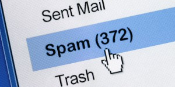

Sociálne riziká informačných technológií.
Nežiaduca pošta a spam
Nevyžiadané e-maily (tzv. spam) sú nežiaduce správy, často komerčného alebo podvodného charakteru,
ktoré sú hromadne rozosielané používateľom internetu.
- Môžu obsahovať nebezpečné odkazy alebo prílohy.
- Často slúžia ako nástroj phishingu – krádeže údajov.
- Zaťažujú e-mailové schránky a znižujú produktivitu.

Podstránka:
Ďalšia téma: Poplašné správy →